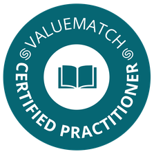

<!DOCTYPE html>
<html lang="en">
  <head>
    <meta charset="utf-8" />
    <meta name="viewport" content="width=device-width, initial-scale=1.0, maximum-scale=1.0, user-scalable=no" />

    <title>Kurzprofil: Matthäus Szturc (deutsch)</title>
    <link rel="shortcut icon" href="./favicon.ico" />
    <link rel="stylesheet" href="./dist/reset.css" />
    <link rel="stylesheet" href="./dist/reveal.css" />
    <link rel="stylesheet" href="./_assets/.reveal-md/mattropolis.css" id="theme" />
    <link rel="stylesheet" href="./css/highlight/vs2015.css" />


    <script>
      document.write(
        '<script src="http://' +
          (location.host || 'localhost').split(':')[0] +
          ':35729/livereload.js?snipver=1"></' +
          'script>'
      );
    </script>
  </head>
  <body>
    <div class="reveal">
      <div class="slides"><section  data-markdown><script type="text/template">

<!-- .slide: class="font-xxs" -->

<split left="1" right="1">

<div class="block">

### Biografie

Matthäus hat mehr als zehn Jahre Erfahrung in der Implementierung agiler Kulturen und Systeme in Unternehmen aller Größen und auf allen Unternehmensebenen. Des weiteren bringt Matthäus 10 Jahre Erfahrung in objektorientierter Softwareentwicklung im Java- / Mobile- und JavaScript Umfeld mit.

Seit Februar 2018 ist Matthäus geschäftsführender Gesellschafter der Agile Process und damit Teil des Teams der Agile Process.

Zuletzt war Matthäus als Organisationsentwickler bei der AOK Systems im Einsatz und hat dort gemeinsam mit deren Geschäftsführung eine Strategie zur Implementierung von Agilität in und außerhalb der IT entwickelt.


### Mission

Ganzheitliche Lösungen für nachhaltige Systeme entwickeln, die Kunde, Investor und Mitarbeiter ernst nehmen und gemeinschaftliche Zusammenarbeit auf einer kollegialen Ebene ermöglichen.


### Bisherige Funktionen

- Integraler Ansatz im Coaching & in der Organisationsentwicklung
- Unternehmer aus Leidenschaft, Servant Leader aus Überzeugung
- Agile Coach, Softwarearchitekt & Mediator

</div>

<div class="block">

<p class="w50 reset-paragraph"></img></p>

<style>
	.certification-wrapper {
		display: flex;
	}
	
	.certification-wrapper p {
		margin: 0 5px;
	}
	
	.certification-wrapper img {
		object-fit: contain;
	}
	
	.certification-wrapper h3 {
		display: none;
	}

</style>
	
<div class="certification-wrapper h10">

	
### Top

<p class="reset-paragraph"></img></p>

<p class="reset-paragraph"></img></p>

<p class="reset-paragraph"></img></p>

<p class="reset-paragraph"></img></p>

<p class="reset-paragraph"></img></p>

<p class="reset-paragraph"></img></p>

<p class="reset-paragraph"></img></p>


	

</div>	

### Ausgewählte Projekterfahrung
- **Unternehmensgründung**: Ausgründung der VHV-Tochter digital broking GmbH, einem Startup mit der Mission, „Das Check24 der Makler zu werden“ in der Rolle des COO.<br><br>
- **Transition** der ING-DiBa: Neuausrichtung des Konzerns in eine kunden-zentrierte Produktorganisation in der Rolle des Unternehmensberaters als Teil des Transitionsteams.<br><br>
- **Bereichleitung**: Aufbau des Competence Center‘s Agility für die adesso AG mit disziplinarischer Verantwortung für über 50 Mitarbeiter

</div>
	
</split>
</script></section><section  data-markdown><script type="text/template">
</script></section></div>
    </div>

    <script src="./dist/reveal.js"></script>

    <script src="./plugin/markdown/markdown.js"></script>
    <script src="./plugin/highlight/highlight.js"></script>
    <script src="./plugin/zoom/zoom.js"></script>
    <script src="./plugin/notes/notes.js"></script>
    <script src="./plugin/math/math.js"></script>
    <script>
      function extend() {
        var target = {};
        for (var i = 0; i < arguments.length; i++) {
          var source = arguments[i];
          for (var key in source) {
            if (source.hasOwnProperty(key)) {
              target[key] = source[key];
            }
          }
        }
        return target;
      }

      // default options to init reveal.js
      var defaultOptions = {
        controls: true,
        progress: true,
        history: true,
        center: true,
        transition: 'default', // none/fade/slide/convex/concave/zoom
        plugins: [
          RevealMarkdown,
          RevealHighlight,
          RevealZoom,
          RevealNotes,
          RevealMath
        ]
      };

      // options from URL query string
      var queryOptions = Reveal().getQueryHash() || {};

      var options = extend(defaultOptions, {"transition":"slide"}, queryOptions);
    </script>


    <script>
      Reveal.initialize(options);
    </script>
  </body>
</html>
